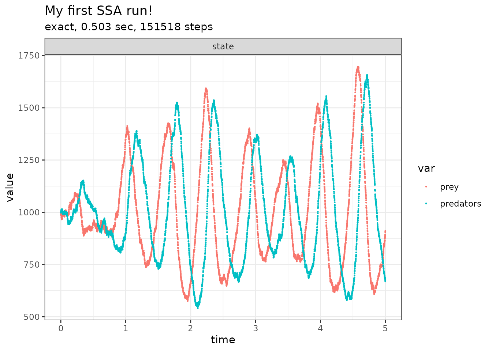

In order to invoke ssa(), the stochastic model needs at
least three components:
- the initial state vector (
initial_state), - the reactions (
reactions), - the final time of the simulation (
final_time).
The initial state vector defines the population sizes in all the
states at \(t = 0\). For example, for a
system with two species prey and predators
where both have an initial population size of 1000, the initial state
vector is defined as follows.
library(GillespieSSA2)
initial_state <- c(prey = 1000, predators = 1000)The reactions define the change in the number of individuals that can occur at any given timepoint during the simulation. During an infinitesimal period of time, the reaction can occur with a probability defined by its propensity function. For example, a system with abovementioned species could have three reactions; one in which the prey population grows, one in which the predator population grows by feasting on the prey, and one in which the predator population diminishes. The matrix could then be defined as follows.
params <- c(c1 = 10, c2 = 0.01, c3 = 10)
reactions <- list(
# propensity function effects name for reaction
reaction(~c1 * prey, c(prey = +1), name = "prey_up"),
reaction(~c2 * prey * predators, c(prey = -1, predators = +1), name = "predation"),
reaction(~c3 * predators, c(predators = -1), name = "pred_down")
)The simulation can be started by calling the ssa()
function.
out <-
ssa(
initial_state = initial_state,
reactions = reactions,
params = params,
method = ssa_exact(),
final_time = 5,
census_interval = .001,
verbose = TRUE,
sim_name = "My first SSA run!"
)## Running SSA exact with console output every 1 seconds
## walltime: 0, sim_time: 0
## SSA finished!
print(out$stats)## method sim_name sim_time_exceeded all_zero_state negative_state
## 1 exact My first SSA run! TRUE FALSE FALSE
## all_zero_propensity negative_propensity walltime_exceeded walltime_elapsed
## 1 FALSE FALSE FALSE 0.4793599
## num_steps dtime_mean dtime_sd firings_mean firings_sd
## 1 151518 3.299954e-05 1.538995e-07 1 0
plot_ssa(out)## Loading required namespace: ggplot2